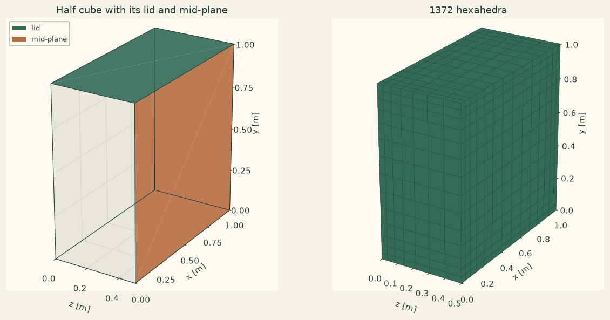

Docs › Examples › Lid-driven flow in a cubic cavity
Incompressible flow · 3D
Lid-driven flow in a cubic cavity
The classic driven cavity as a real cube: how the end walls weaken the primary vortex at Re = 100 and 400.
Run locally with OneSimulation. The example downloads are free. Running them requires an activated runtime. Runtime Alpha 0.2.1a7 · CPython 3.13 on macOS (Apple Silicon), Ubuntu 22.04 (x86-64), and Windows x64. Installation and activation · View pilot plans. Scope of the reference checks.

What it computes
The half cube is read from a STEP file with named faces. OneSimulation solves the steady 3D Navier-Stokes equations with 27-node Taylor-Hood Q2/Q1 hexahedra on a wall-graded grid and Newton iterations, with a symmetry plane at mid-span. The script that builds the STEP file comes with the notebook.
What it checks
The centreline velocity extrema agree with the published 3D finite-volume values within 0.3 % at Re = 100 and within 2 % at Re = 400.
Geometry
The notebook starts at the import of the CAD file lid_driven_cube_3d.step: STEP (AP242), readable by any CAD program, with the names of the faces that the boundary conditions use. Put it next to the notebook.

The geometry script
The script lid_driven_cube_3d_geometry.py builds the geometry with the CAD objects of OneSimulation and writes the file. Change a dimension there, run it, and run the notebook again.
"""Geometry of the OneSimulation example "Lid-driven cubic cavity in three dimensions".
Builds one half of the cube of side 1 m, cut at its mid-plane z = 0.5 m, with the CAD objects of
OneSimulation and writes lid_driven_cube_3d.step. The lid is the face y_max, the mid-plane z_max;
the faces keep their names x_min, x_max, y_min, y_max, z_min and z_max in the file.
"""
from onesim.cad.d3 import Box
half_cube = Box(length=1.0, width=1.0, height=0.5)
half_cube.save("lid_driven_cube_3d.step")The notebook
The complete notebook, cell by cell. Run it to produce the figures and the comparison printout.
A cube of side \(L\) is filled with an incompressible fluid. Its top face (the lid, \(y=L\)) slides in the \(x\)-direction with the speed \(U\); the other five faces are fixed walls. The Reynolds number is \(Re=\rho UL/\mu\). Unlike in the two-dimensional cavity, the end walls \(z=0\) and \(z=L\) brake the vortex, and fluid spirals along the vortex axis.
The flow is mirror-symmetric about the mid-plane \(z=L/2\), so the half cube is computed with a free-slip condition on that plane. It comes from the CAD file lid_driven_cube_3d.step: the lid is the face y_max, the mid-plane z_max. The script lid_driven_cube_3d_geometry.py builds it with the CAD objects of OneSimulation.
Reference. Oueslati, Ben Beya and Lili (Comptes Rendus Mécanique 339, 2011) report the extreme velocities on the two centre lines of the mid-plane: the minimum of \(u\) along the vertical line and the minimum of \(v\) along the horizontal line, with their positions.
import numpy as np
from onesim.cad.d2 import Plane
from onesim.cad.exchange import load
from onesim.materials import NewtonianFluid
from onesim.meshing import StructuredHexahedralMesher, Tanh
from onesim.numerics import Numerics
from onesim.numerics.fem import FiniteElement, TaylorHood
from onesim.numerics.linear import SparseDirect
from onesim.numerics.nonlinear import Newton
from onesim.physics.hydrodynamics import (
FixedVelocity,
FreeSlipLaw,
IncompressibleNavierStokes,
NoSlipWall,
WallShear,
)
from onesim.simulation import Problem, Simulation
from onesim.simulation.field_constraints import MeanValue
from onesim.simulation.initial_conditions import InitialValue
from onesim.visualization import plots, theme
theme.set()Geometry and mesh
The mesh is graded towards all walls, not towards the mid-plane.
half_cube = load("lid_driven_cube_3d.step")
faces = half_cube.boundaries
side, _, half = half_cube.size
cells = 14
mesh = StructuredHexahedralMesher(
cells=(cells, cells, cells // 2),
grading=(Tanh(cells, 1.2), Tanh(cells, 1.2), Tanh(cells // 2, 1.2, toward="start")),
).generate(half_cube)
view = plots.Camera(elevation=24, azimuth=-58, up="y")
fig = plots.figure(1, 2, size=(13, 6))
plots.geometry(
half_cube,
selection={"lid": faces.y_max, "mid-plane": faces.z_max},
labels=False,
camera=view,
title="Half cube with its lid and mid-plane",
ax=fig[0],
)
plots.mesh(
mesh,
groups=("all",),
legend=False,
camera=view,
title=f"{mesh.cell_count} hexahedra",
ax=fig[1],
)
plots.show()Model
The lid speed falls to zero over the last 36 mm before the walls it meets, so the velocity stays continuous in the corners. Newton's method solves the stationary Navier-Stokes equations; the run at \(Re=400\) starts from the solution at \(Re=100\).
published = {
100: {"u_min": -0.21361, "y": 0.47702, "v_min": -0.24971, "x": 0.81026},
400: {"u_min": -0.22979, "y": 0.22433, "v_min": -0.37685, "x": 0.87127},
}
flows, start = {}, (0.0, 0.0, 0.0)
for reynolds in published:
model = IncompressibleNavierStokes(
domain=half_cube.volume,
material=NewtonianFluid(density=1.0, dynamic_viscosity=side / reynolds),
)
problem = Problem(
name="Lid-driven cube",
geometry=half_cube,
physics=(model,),
boundary_conditions=(
FixedVelocity(
boundary=faces.y_max,
physics=model,
value=lambda x, y, z: np.column_stack(
(
np.clip(np.minimum.reduce([x, side - x, z]) / 0.036, 0.0, 1.0),
0 * x,
0 * x,
)
),
),
NoSlipWall(
boundary=faces.x_min | faces.x_max | faces.y_min | faces.z_min,
physics=model,
),
WallShear(boundary=faces.z_max, physics=model, law=FreeSlipLaw()),
),
constraints=(MeanValue(model.pressure, 0.0),),
initial_conditions=(InitialValue(model.velocity, (0.0, 0.0, 0.0)),),
)
numerics = Numerics(
spatial=FiniteElement(element=TaylorHood()),
initial_guess={model.velocity: start},
nonlinear_solver=Newton(
linear_solver=SparseDirect(),
absolute_tolerance=1e-9,
relative_tolerance=1e-9,
maximum_iterations=30,
),
)
flows[reynolds] = previous = (
Simulation(problem=problem, mesh=mesh, numerics=numerics)
.solve_stationary()
.field(model.velocity)
)
start = lambda x, y, z: previous.evaluate(np.column_stack((x, y, z)))Results
The velocity on the two centre lines of the mid-plane and its extreme values.
s = np.linspace(0, side, 401)
middle = np.full_like(s, half)
u = {
re: flow.evaluate(np.column_stack((middle, s, middle)))[:, 0]
for re, flow in flows.items()
}
v = {
re: flow.evaluate(np.column_stack((s, middle, middle)))[:, 1]
for re, flow in flows.items()
}
print(" Re quantity simulation published")
for re, reference in published.items():
values = {
"u_min": u[re].min(),
"y": s[u[re].argmin()],
"v_min": v[re].min(),
"x": s[v[re].argmin()],
}
for name, value in values.items():
print(f"{re:4d} {name:10s} {value:12.4f} {reference[name]:11.4f}")Figure
The speed on the mid-plane for both Reynolds numbers, and the centre-line profiles with the published extreme values.
speed = lambda velocity, position: np.linalg.norm(velocity, axis=1)
fig = plots.figure(1, 3, size=(17, 5.2))
for panel, (re, flow) in zip((fig[0], fig[1]), flows.items()):
plots.section(
flow,
plane=Plane(origin=(0, 0, 0.9998 * half), normal=(0, 0, 1)),
component=speed,
limits=(0, 1),
contours=10,
subdivisions=3,
label="speed / lid speed",
title=f"Mid-plane, Re = {re}",
ax=panel,
)
plots.line(
y={f"u along the vertical line, Re = {re}": (u[re], s) for re in flows},
points={
"published minima": (
[published[re]["u_min"] for re in flows],
[published[re]["y"] for re in flows],
)
},
xlabel="u / lid speed",
ylabel="y / L",
title="Vertical centre line",
legend="lower right",
ax=fig[2],
)
plots.show()Going further
Raise the Reynolds number in steps to 1000, each run starting from the previous one, and the corner vortices grow. Refine the mesh with cells, or make the box longer in \(z\) in lid_driven_cube_3d_geometry.py and write the STEP file again to approach the two-dimensional cavity.